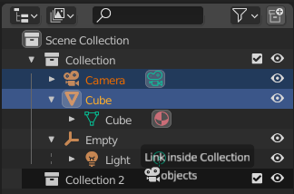

用法¶
关系管理¶

将物体关联到集合。¶
可以拖放管理大纲视图中的数据关系。LMB 单击并从数据块的名称或图标上开始拖放操作。
物体可以通过拖动到集合名称或内部，从而移动到集合里。要关联一个物体到集合，放置时按住 Ctrl。要在物体间设置父子级关系，将一个物体拖放到另一物体时，按住 Shift。
Note
拖放将尝试对所有选中项进行操作。与操作不兼容的选中数据块将保持未修改状态。
将物体关联到集合。¶
可以拖放管理大纲视图中的数据关系。LMB 单击并从数据块的名称或图标上开始拖放操作。
物体可以通过拖动到集合名称或内部，从而移动到集合里。要关联一个物体到集合，放置时按住 Ctrl。要在物体间设置父子级关系，将一个物体拖放到另一物体时，按住 Shift。
Note
拖放将尝试对所有选中项进行操作。与操作不兼容的选中数据块将保持未修改状态。